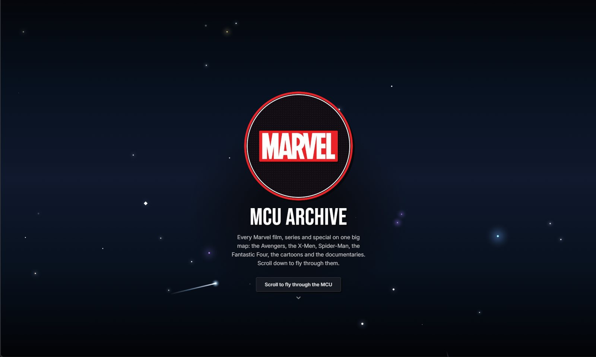

An interactive, cinematic mind-map of the Marvel Cinematic Universe. Every film and series is a poster on a pannable, zoomable canvas, connected by glowing lines, with several ways to explore the timeline.

A small set of JSON files becomes a map you can fly through, in four steps.
Titles, phases, release dates, timeline order and characters for seven worlds, kept in one data file each.
Mind maps, phase rings and timelines are computed from the data, then pushed apart so posters never overlap.
Pan, zoom and tilt are projected with a little perspective, with no 3D library.
Posters, synopses, cast, trailers and where-to-watch buttons load live when a card opens.
A general layout problem: overlapping posters. A deterministic pairwise separation pass keeps every poster’s position stable and repeatable across views.
Select a screenshot to open it, then select it again to switch between fit-to-screen and full size.
A glowing Marvel logo opens a scroll-driven fly-through of every world, before the archive itself.
Seven worlds on one canvas, each growing out of its own logo like a mind map being drawn.
Phases branch from the hub, titles branch from each phase, with the view panel on the left.
A 3D-style scroll fly-through opens into an animated archive, with a deterministic custom starfield and depth effects.
Seven Marvel worlds explored through mind maps, phase rings, release and chronological timelines, poster maps and character journeys.
TMDB supplies posters, synopses, cast, trailers and viewing options, and browser history powers shareable deep links.
Framework-free JavaScript and HTML5 Canvas with camera projection, easing, responsive layouts and 2.5D tilt.
Hand-built a navigable cinematic world with reusable data models, responsive layouts and complex custom-rendered interaction.